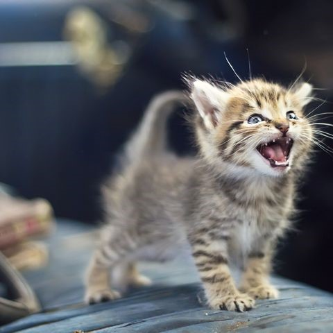
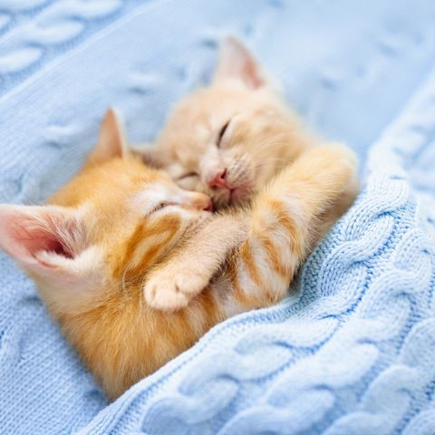

Everything About Cats
Never leave a cup of coffee unattended when a cat is around. Although it
does make for a good photo.
Excuse me, sir, but how exactly did you get in that boot?

We wouldn't recommend packing pack your cat in your suitcase, but do
encourage you to take them on vacation to make it better.
Is the mug very large or is the cat very tiny? It doesn't matter, either
way, this is perfect.
This is definitely a very tiny lion. Not a cat. Sorry.
You know you're adorable when you don't even have to do anything but
stare at a camera and everyone still thinks your photo is the cutest.
Is it just us, or does this cat remind you of Simba from The Lion King
just a little bit?
We take it back: Cats look really, really cute on their own little beds.
Like unbelievably cute.
Look at him playing with his dinosaur toy! Look at those big eyes!
This little kitten is demanding to be heard, and we are all ears.

The little paws! The tiny pink nose! The legs up in the air! There is
nothing about this picture that isn't the sweetest.
It truly does not get cuter than a cat in a very deep sleep in an
extremely comfortable position.
Cats curling up into a little ball at your feet are the absolute
definition of comfort.

Who knew a luxurious stretch could be so perfect?
A kitten AND a baby? That's just too much. It's cuteness overload!!
Sorry, no idea how a unicorn got into this mix of cat photos, but, uh,
we'll keep it.
.jpg)
The most precious cat is the cat who is completely at ease while being
scratched under the neck. We can't blame them.
Excuse us, it's just that you look so cute even while eating that we
can't help but watch!
Our brains and hearts are exploding because this picture is utter
perfection.

Petition to make sure that every single cat has to be tucked into a bed
so they sleep exactly like this.
An adorable cat and a huge chunky knit blanket? We just want to dive
right into this photo.
The definition of the perfect spring day is frolicking in a field of
wildflowers with this little cat.
You can't look at a bunch of cute cat photos and not include at least
one photo of a cat cuddling with a dog.
"Oh... hi... just hanging out in my box, otherwise known as my new
home."
This is definitely a very tiny lion. Not a cat. Sorry.